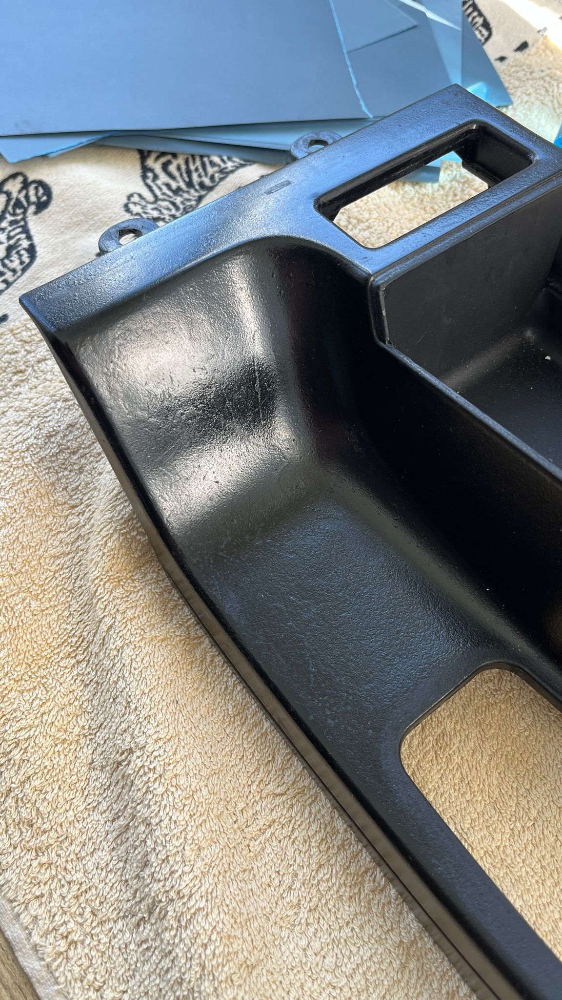
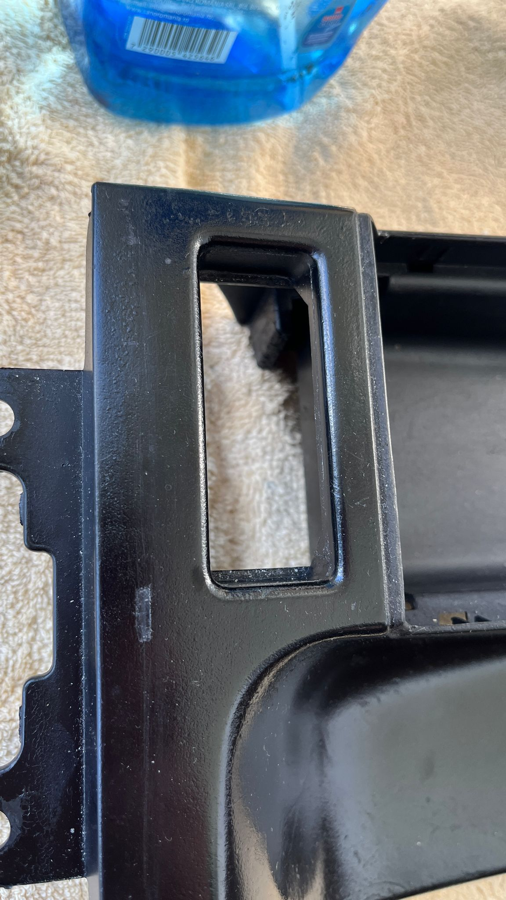
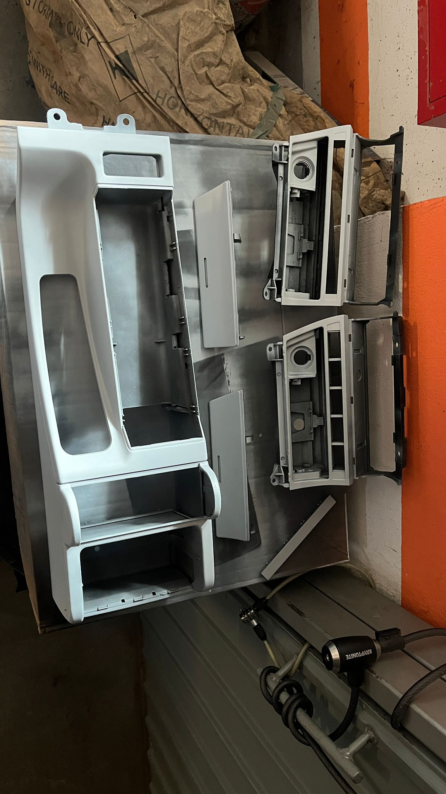
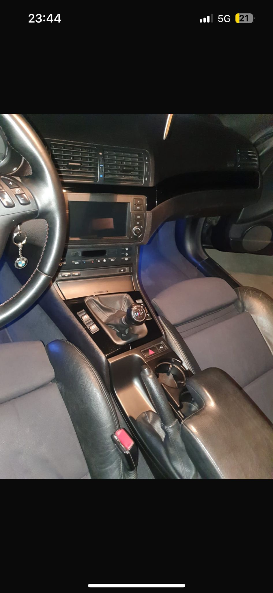

RRS Projects
Cu totii stim frustrarea vizuala cand vedem defectele in timp ale elementelor de interior trim, consola centrala, bricheta si in general, plastic a carei vopsea este afectata din cauza varstei si razelor UV de vara calduroasa alaturi de soare puternic, de aceea RRS Projects va prezinta procesul de restaurare unor elemente de interior ale unui BMW e46.
Un proces lung si cu atentie la detalii inca de la bun inceput, sanding cu diferite numere abrazive, wet sanding si dry sanding, finishing touches before primer, alegerea de a folosi primer grund a fost pentru a preveni ulterioare defecte de material iar dupa vopsea 2k. Enjoy!
All work reserved for blog and entertaining reasons only.

Aici se poate vedea foarte clar cat de afectata a fost consola din imagine, o consola centrala a unui bmw e46 coupe 325ci a carei varsta si defect, isi spune cuvantul in totalitate, ca urmare se va incepe procesul de restaurare prin o decontaminare in prima faza, o analiza a defectelor, o constatare completa.

Ca urmare vom incepe prin a aplica foi abrazive de 400, 600, 800, 1000 iar ulterior dupa aplicarea primerului vom folosi foi abrazive fine de regula 2000 3000 pentru a scoate defectele in plus.

Asadar, dupa procesul de indreptare a meterialului s-a aplicat si grund filler.

In cele din urma rezultatul vorbeste de la sine, un rezultat cu o reusita excelenta si un aspect de nou semi fabricat in masina, o metoda simpla dar de durata pentru a readuce la viata elementele de interior deteriorate.